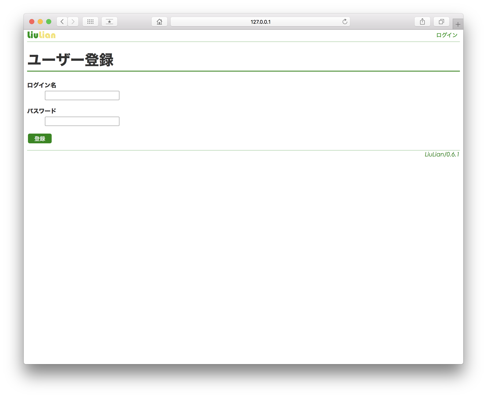
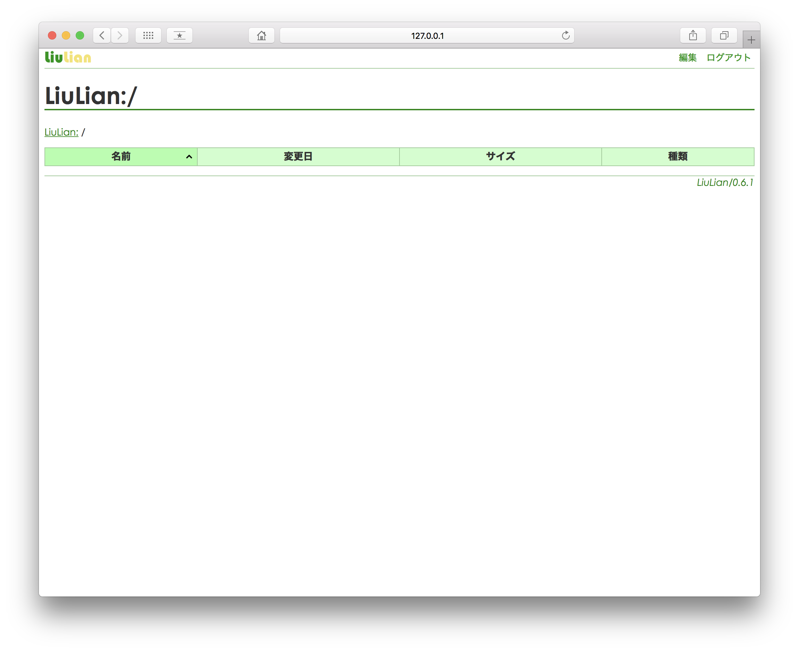

npm でインストールします。
$ npm i -g @kobalab/liulian
コンテンツや設定を保存するディレクトリを指定して起動します。
$ liulian ~/Documents/LiuLian/
デフォルトではポート番号 3571 で起動します。これを変えたい場合は --port オプションを使用します。
$ sudo /usr/local/bin/node /usr/local/bin/liulian --port=80 /var/liulian/
http://127.0.0.1:3571 にアクセスすると以下の画面が表示されます*1ので、ログイン名とパスワードを入力して「登録」ボタンを押下します。

以下の画面が表示されればユーザー登録は完了です。

続いて コンテンツを作成 します。
--port でポート番号を変えた場合はそこにアクセスしてください